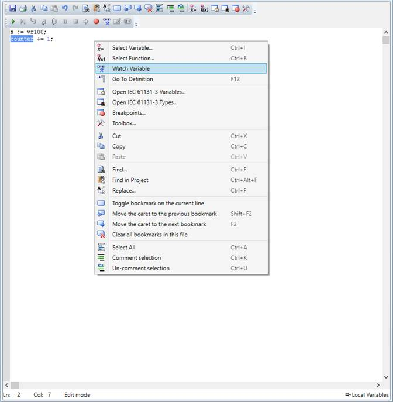

Structured Text is a text-based high-level programming language that supports most of the traditional procedural programming language paradigms, and it syntactically resembles Pascal . All of the languages share IEC 61131-3 Common Elements. The variables and function calls are defined by the common elements so different languages can be used in the same program.
Complex statements and nested instructions are supported:
• Iteration loops (REPEAT-UNTIL; WHILE-DO)
• Conditional execution (IF-THEN-ELSE; CASE)
• Functions (SQRT(), SIN())
The ST editor's context menu has the following commands:
|
Menu Entry |
Action |
|
Select variable |
Displays a dialog for inserting/selecting a variable |
|
Select function |
Displays a dialog for inserting/selecting function block |
|
Watch Variable |
Add selected variable to Watch Variables Tool for monitoring |
|
Go To Definition |
Open Variables editor and navigate to the selected variable |
|
Open IEC 61131-3 variables |
Open the IEC variables tool |
|
Open IEC 61131-3 types |
Open the IEC types tool |
|
Breakpoints |
Open breakpoints manager window |
|
Toolbox |
Open toolbox control, from where using drag and drop functions and function blocks can be added to the program |
